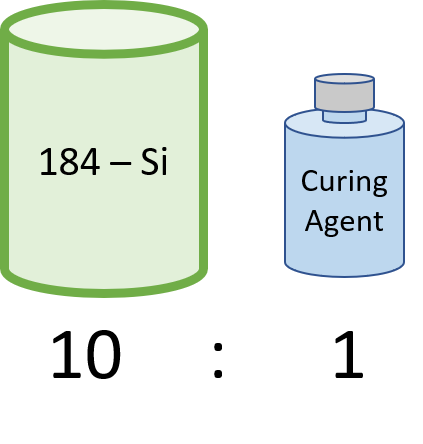

Fabrication Methods
Overview
Please be aware the following SOPs are not for untrained users but for people who have had training previously and just need a bit of reminder.
The variables are subject to change depending on the application of your particular sample!!!
Photolithography
For big wafers use big containers.
Stuff you need:
DI water (MilliQ)
Hot plate (100 deg C)
Cupboard:
Developer AZ 726
Photo resist AZ 1518
Fume Cupboard:
Spin coater
Steps:
To clean substrate: use IPA (Isopropyl Alcohol), either wipe with Kimtech or use spin coater and spray IPA.
Select Program on spin coater with rpm ~4000 in vacuum:
\(\rightarrow\) Start
Squirt acetone and then IPA through lid hole.
Check surface, if not clean then wipe with Kimtech and then spin again with IPA ~ 1 min.
Drop resist all over and spread gently using the dropper (do not waste as we are poor):
\(\rightarrow\) Start
Place substrate on hot plate for 1 min to bake.
Place substrate on marked mask mask, coated side face down.
Plug vacuum line in, once aligned:
Turn on illumination dial.
Pull side rod out for monitor view.
Check your pattern is aligned with microscope.
Put substrate in, turn down “illumination” to prevent exposure to resist.
WEC setting:
Close contact lever.
Follow instructions.
Parameters:
Exposure time ~2 sec
\(\rightarrow\) Load
Exposure (TURN AWAY).
Open lever, take substrate out.
Develop for 10 seconds (INSERT DIAGRAM) then immediately into water.
Dry surface with N 2, bottom side with Kimtech.
Check with microscope.
Oxygen Plasma Cleaning
Manual process. Make sure the bottom two buttons are not green.
Vent vacuum
\(\rightarrow\) Open Lid \(\rightarrow\) Load sample \(\rightarrow\) Close lid
Select recipe:
Pres. Set (mT), 10 |
10 |
ICP set |
5 |
RIE set |
25 |
Process time |
10 |
O 2 Set |
25 |
Turn gas on
\(\rightarrow\) When gas is ready, turn RF on for 10 seconds.
Chemical Vapour Deposition - SEKI
Check that pump is attached to the main setup, make sure dial is turned off and the pumping valve is also off when starting.
Check if stage is vacuumed, if not, carefully open partially and slowly release.
Clean carbon puck and tube with IPA.
Load, elevate stage and place sample.
Pump on, open valve all the way.
Make sure pressure drops to 0.5 [INSERT REF TO INSTRUMENT 1]
\(\rightarrow\) SEKI is powered by the bottom right switch (under the big CVD) and is marked with AXSID. Once you hear air hissing it means it is on.
Turn on computer (pw: PAT2), open IE and select appropriate gas for your application (H 2, N 2 and ?)
Check flow point: 0
After 10 mins, set point: 100-400
\(\rightarrow\) Start
Set point on pressure controllers, start at [A] ≈10 Torr, let it settle for a minute or so and then ignite plasma.
-Turn on instrument [2] -HV: ON -Check F-Watt, if it ignites then it is OK
Use turning rods to get R Watt as close to 0 as possible
Go through set points [B] - [E] (if you need, SLOWLY)
To shut down:
Go backwards through set points [E] - [A]
-When it is close to 10 Torr, turn HV: OFF then shut power, turn pressure to OPEN.
Turn gas set point: 0
Turn off at main power (AXSID marking).
Allow 20 mins to cool.
Shut off roughing pump
Bring down stage very slowly by dropping screws 1 mm each, vent a little Ar 2 (green screw)
Slowly take screw off and lower stage.
Shut stage, screw in and turn on roughing pump again.
PDMS
Making PDMS mould/anything
Stuff you need:

184-Silicone SYLGARD
Curing Agent
{kind=link}
Option 1: (if only a little is needed)
Mix on glass lside or small palstic weigh boat
- Option 2:
Mix in beaker (disposable only)
Place on heat stage to cure:
~ 150 C = 10 min
~ 100 C = 30 min
Lindberg Blue Tube Furnace (max 1100 C)
INCOMPLETE 07/10/22
Stuff you need:
EtOH (for cleaning)
A clean tube
Vacuum components (clamps, allan keys, o-rings–> call in the drawer beneath the furnace)
Loading sample:
Close B side of the tube
Wipe boat/tube with EtOH
Push sample to centre using cleaned rod
Close A side
To pump:
\(\rightarrow\) Pump down
Turn ‘MAX’ handle up, switch pump on at outlet.
Run Ar 2
-on computer:
➔Set point ‘B’ to 100 sccm, check MFC is stabilised.
Wait 10 mins.
Program (setting annealing temp):
P
^
˅
<
For top menu, press:
P
Pr n |
Select the program number |
Sub menu, press together x 2:
|
|
Spectrometer SpecWin Settings
INCOMPLETE 07/10/22
Background Correction Steps
In order to take background correctly, the following settings must be in place under Experiment Setup